All Data Points Lead to Reporting and Analysis
Calculating plan data must be the bedrock of any planning application. Understanding and acting upon that information, within OneStream and without, is the true purpose of any performance management system and is realized only through reporting and analysis.
This chapter will examine:
Planning with Dashboards.
Performing faster data exports from OneStream for external consumption.
Analyzing large volumes of data related/unrelated to OneStream.
All Data Points Lead to Reporting and Analysis
Planning with Dashboards
The nature of this book is Planning, not dashboarding. But all work and no play makes Jack a dull boy; data comprehension is aided when supplemented by “pretty” Dashboards that highlight key financial information at a glance. OneStream adds its own flavor to these Dashboards by letting the OneStream practitioner make them interactive.
Planning mostly avoids a lot of dashboarding because we Planners think that we are all about numbers. Dashboards are about the numbers. Even though this section covers Dashboards, it is deeply rooted in the data and the numbers that Planning and Budgeting requires.
All Data Points Lead to Reporting and Analysis › Planning with Dashboards
Data Management Sequences
As we mentioned in the Theory, Philosophy, and Practice chapter, Custom Calculate Finance Business Rules run business models in Planning. In the following examples, two Data Management Sequences will be used to execute the calculations from a Dashboard button and from a Dashboard Extender Rule.
The Sequences CopyToPennsylvania and DistributionCalculation are as shown in Data Management.
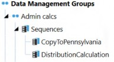
Figure 5.1
All Data Points Lead to Reporting and Analysis › Planning with Dashboards
Run on Save
A common Planning Scenario is executing a rule after entering driver numbers. In this example, C&CCC’s Planners want to calculate the Distribution after entering a distribution rate for a product.
If a Finance Business Rule is being used to execute the distribution calculation (and it should be in preference to formulas or rules attached to a Cube to run on Consolidation), a Custom Finance Business Rule to execute the distribution calculation on save can be performed through a simple Dashboard.
Your author always finds it helpful to draw the Dashboard, even with his poor artistic skills, to have a clear idea of the User’s needs.
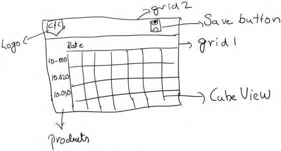
Figure 5.2
All Data Points Lead to Reporting and Analysis › Planning with Dashboards › Run on Save
Components
This rough design sketch will need the following Components to become a fully-fledged Dashboard:
One Cube View
A button to execute a DM job
An image
From these Components, and looking at the rough layout of the picture to create a Dashboard similar to the picture, the following are needed:
A dock-type Dashboard with a left-docked image (Logo) and a right-docked button (Save Button).
A Dashboard to hold the Cube View.
A Dashboard with two rows to hold Dashboards 1 and 2 (above).
All Data Points Lead to Reporting and Analysis › Planning with Dashboards › Run on Save › Components
Cube View
Cube Views can be used as Dashboard Components for data entry and reporting. The Products Dimension in rows, Time in a Column, and every other Dimension is in the POV. If you do not choose a Cube View POV Member, it takes it from the Cube POV. It is almost always a good practice to fully define the POV within the Cube View.
All Data Points Lead to Reporting and Analysis An alias is used on the Time Member to aid User comprehension.
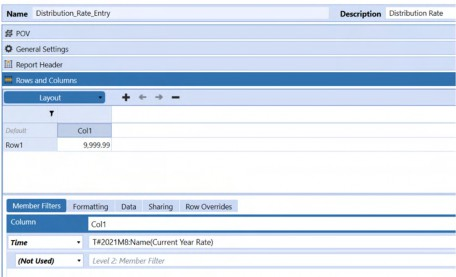
Figure 5.3
This Cube View Distribution_Rate_Entry is added as a Cube View Component in the Dashboard Maintenance Unit.
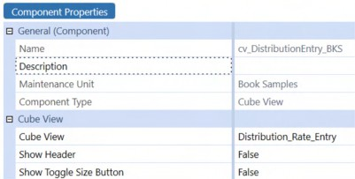
Figure 5.4
By making the Show Header property False, the default Cube View buttons are removed from the Dashboard.
All Data Points Lead to Reporting and Analysis › Planning with Dashboards › Run on Save › Components
Button – to Run the Model
In OneStream Dashboarding, Buttons play a major role. They can be used to download objects, upload a file to a location, run Business Rules, or run Data Management sequences. This section illustrates how to use a button to execute a Data Management sequence.
| Note: Component property descriptions are given in the order they appear in OneStream. |
An image file – Save_Button.png – saved as Dashboard File is used. Images are not required for Buttons to work, but they aid understanding. There are many public domain Open, Save, Print, etc. icon files on the web; use one or subscribe to an image library.
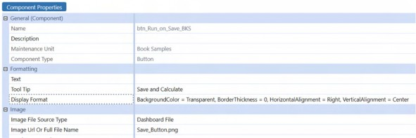
Figure 5.5
Since an image is used in the Button, it should (this is your author’s design choice) appear as a part of the Dashboard and not stand out as a separate Component; a transparent background color is used. A border thickness of zero ensures no border is added to the Button, and the right alignment makes it dock to the right.
In the Button action section, a click will fire the Save Data for All Components action for the Selection Changed Save Action. This means that on a button click, all open Cube Views, Spreadsheet Quick Views, etc., will be saved to the Cube.
On the Selection Changed Server Task, running the Data Management Sequence {Distribution Calculation}{} executes the Finance Business Rule. Note the set of empty curly braces – these are used to pass parameters to the sequence and required whether parameters are passed or not.
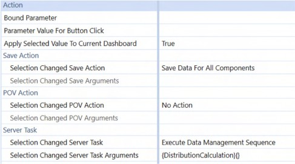
Figure 5.6
All Data Points Lead to Reporting and Analysis › Planning with Dashboards › Run on Save › Components
Image
The image Component shows an image on the Dashboard. The source graphics file that comprises an image can be stored in multiple locations; since this image is specific to this Dashboard board, it is uploaded as a Dashboard file.
If an image is reused multiple times in an application, it is recommended to store it as an
Application Database file.
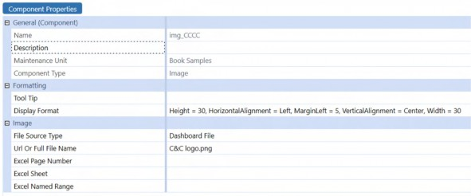
Figure 5.7
Since the header row width is small in the main Dashboard, the image’s width and height are fixed at 30.
All Data Points Lead to Reporting and Analysis › Planning with Dashboards › Run on Save › Components
Header Dashboard
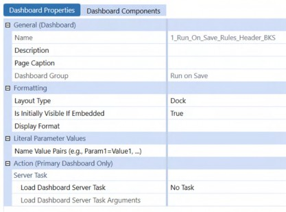
Figure 5.8
Image Components and the Save Button Component go here.
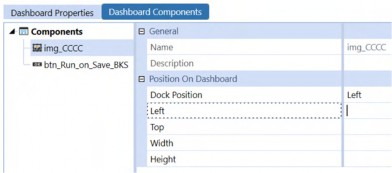
Figure 5.9
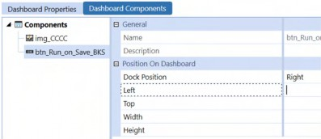
Figure 5.10
All Data Points Lead to Reporting and Analysis › Planning with Dashboards › Run on Save › Components
Cube View Dashboard
A Dashboard that contains just this single Cube View is not required since that Cube View is the only Component. However, creating what seems to be a redundant Dashboard is a way of future-proofing to allow more Components to be added (if needed) to this Dashboard at a later point in time.
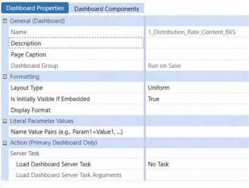
Figure 5.11
All Data Points Lead to Reporting and Analysis › Planning with Dashboards › Run on Save › Components
Main Dashboard
Now that all the Components are ready, it is now just a matter of housing the above two Dashboards into a single one.
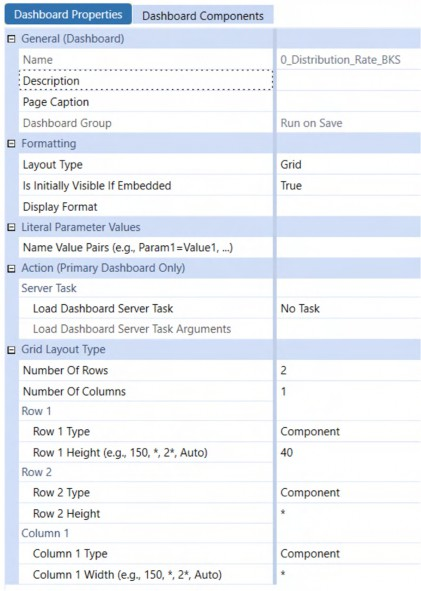
Figure 5.12
The header Dashboard is given a height of 40 (as it works perfectly for line headers), and the rest of the space is occupied by the Cube View Dashboard.
Here is how it looks when viewed as a Dashboard.
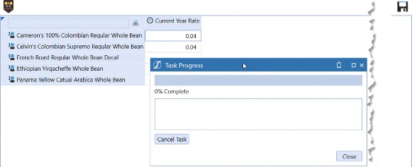
Figure 5.13
All Data Points Lead to Reporting and Analysis › Planning with Dashboards
Select and Run Multiple Rules
C&CCC’s Planners want choice when it comes to running Business Rules. Who does not want choice in life, huh?
What they want – what they need – is a list of rules to be presented on-screen while entering data (with a default selection). From this list, the Planners can select the ones to execute.
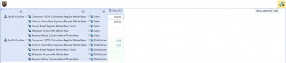
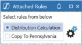
Figure 5.14
This is a perfect use case for a multi-select option. The following Components allow multi-select:
Combo Box
List Box
Grid View
SQL Table Editor
All Data Points Lead to Reporting and Analysis › Planning with Dashboards › Select and Run Multiple Rules
Components
This use case’s Dashboard follows a similar structure as our previous one, and will need the following Components:
One Cube View
A button to show the rule list
An image
A dock-type Dashboard with a left-docked image, and a right-docked button to separate the header
A delimited parameter with the list of DM jobs
A List Box to show the list of rules
A Button to execute the selected rules
A dialog Dashboard to show the List Box and the rule execution Button
A grid-type Dashboard with two rows to hold the Cube View and the header Dashboard
All Data Points Lead to Reporting and Analysis › Planning with Dashboards › Select and Run Multiple Rules › Components
Cube View
A Cube View is created to record Sales data. A calculated Distribution is in the rows. To prevent any data modification, it is marked as read-only (Can Modify Data – False).
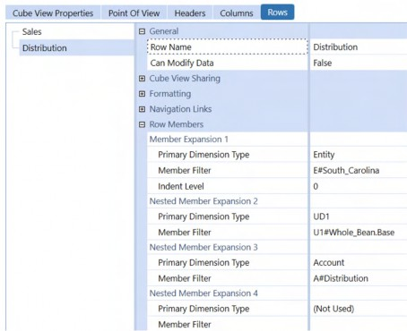
Figure 5.15
This Cube View is now added as a Cube View Component in the Dashboard Maintenance Unit.
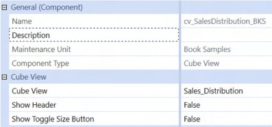
Figure 5.16
By making the Show Header property False, the default Cube View Buttons are removed from the Dashboard.
All Data Points Lead to Reporting and Analysis › Planning with Dashboards › Select and Run Multiple Rules › Components
Button – to Show the Rule Dashboard
An image is used for this Button to show that there are rules associated with the Cube View.
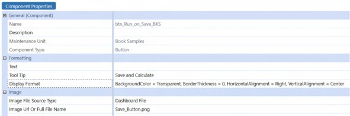
Figure 5.17
In the Button Action section, the Save Action property is set to Save Data For All Components.
When a selection is changed (in this case, a button click), a dialog Dashboard is opened to show the associated rules for the Cube View.
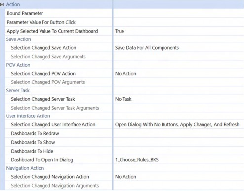
Figure 5.18
All Data Points Lead to Reporting and Analysis › Planning with Dashboards › Select and Run Multiple Rules › Components
Parameter
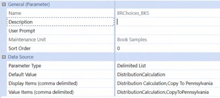
Figure 5.19
A delimited list-type parameter is used to show the rules associated with the Cube View. The values for this parameter are the Data Management Sequence names used to run the Custom Finance Rules.
All Data Points Lead to Reporting and Analysis › Planning with Dashboards › Select and Run Multiple Rules › Components
List Box
A List Box shows the Business Rules that a Planner can execute. To achieve this, the List Box is bound to the parameter we created above.
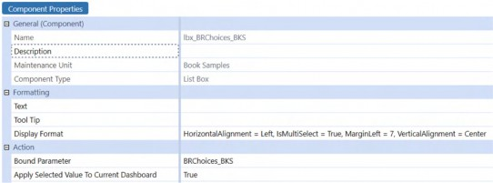
Figure 5.20
Setting the Display Format property of IsMultiSelect to True makes this List Box a selectable one, where Planners can choose one or more rules to execute.
All Data Points Lead to Reporting and Analysis › Planning with Dashboards › Select and Run Multiple Rules › Components
Button – to Execute the Selected Rules
This Button is similar to the one shown in the previous example.
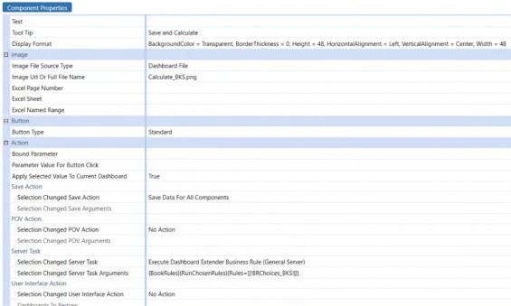
Figure 5.21
Given that the Planner can select multiple Data Management Sequences, there is no option available that can directly receive the selection. This is where a Dashboard Extender Rule comes into play. When the Planner makes the selection, the Bound Parameter can now pass the selection as a comma-separated string to the Rule.
When the Button’s Selection Changed Server Task action fires, the DashboardExtenderFunctionType of ComponentSelectionChanged is tested. The passed parameter RunChosenRules fires as this is the function passed from Selection Changed User Interface Action.
Case Is = DashboardExtenderFunctionType.ComponentSelectionChanged If args.FunctionName.XFEqualsIgnoreCase("RunChosenRules") Then
Dim selectionChangedTaskResult As New XFSelectionChangedTaskResult()
selectionChangedTaskResult = Me.RunChosenRules(si, globals, args)
Return selectionChangedTaskResult
End If
RunChosenRules returns a new XFSelectionChangedTaskResult object back to the Dashboard.
Dim selectionChangedTaskResult As New XFSelectionChangedTaskResult() Dim strChosenRules As String = args.NameValuePairs.XFGetValue("Rules")Next, we get the value of the Data Management Sequences selected by the User.
If Not(String.IsNullOrEmpty(strChosenRules) OrElse StringHelper.DoesStringContainCustomSubstVarsOrSubstVarStringFunctions (strChosenRules))
Dim listChosenRules As List(Of String) = strChosenRules.Split(",").Select(Function(x) x.Trim).ToList()
For Each chosenRule In listChosenRules
Dim params As New Dictionary(Of String, String) BRApi.Utilities.StartDataMgmtSequence(si, chosenRule, params) ' task gets executed in background
Next End IfThis code block checks whether strChosenRules is empty (the Planner did not select a rule) or whether the parameter is evaluated (if it is not evaluated, then the parameter will come to the rule as |!BRChoices_BKS!|).
The Method DoesStringContainCustomSubstVarsOrSubstVarStringFunctions can check whether the supplied parameter value has a substitution variable (|) or a parameter (|!) in the string.
If the check passes, the function then splits the string using a comma as a delimiter, and it also trims each string, e.g., if the User selected both options, the string value is DistributionCalculation, CopyToPennsylvania. For each selected Data Management Sequence, the function will start the sequence as a background job that runs in parallel. If there are dependent rules, use BRApi.Utilities.ExecuteDataMgmtSequence to start them sequentially.
| Note: The above Method of splitting and trimming the string can be used for all the Components that support multi-select like Grid Views, SQL Table Editors, List Boxes, and Combo Boxes. For Grid Views and SQL Table Editors, a bound parameter and a bound column is required to make this work. |
Full function below:
Private Function RunChosenRules(ByVal si As SessionInfo, ByVal globals As BRGlobals, ByVal args As DashboardExtenderArgs) As XFSelectionChangedTaskResult
Try
Dim selectionChangedTaskResult As New XFSelectionChangedTaskResult()
Dim strChosenRules As String = args.NameValuePairs.XFGetValue("Rules")
If Not(String.IsNullOrEmpty(strChosenRules) OrElse StringHelper.DoesStringContainCustomSubstVarsOrSubstVarStringFunctions (strChosenRules))
Dim listChosenRules As List(Of String) = strChosenRules.Split(",").Select(Function(x) x.Trim).ToList()
For Each chosenRule In listChosenRules
Dim params As New Dictionary(Of String, String) BRApi.Utilities.StartDataMgmtSequence(si, chosenRule, params) ' task gets executed in background Next
Else
selectionChangedTaskResult.IsOK = False selectionChangedTaskResult.ShowMessageBox = True selectionChangedTaskResult.Message = "Select a rule to execute."
End If
selectionChangedTaskResult.IsOK = True selectionChangedTaskResult.ShowMessageBox = True selectionChangedTaskResult.Message = "Calculation started" & vbCrLf & "Please check the status in ""Task Activity"""
Return selectionChangedTaskResult Catch ex As Exception
Throw ErrorHandler.LogWrite(si, New XFException(si, ex)) End Try
End FunctionAll Data Points Lead to Reporting and Analysis › Planning with Dashboards › Select and Run Multiple Rules › Components
Dialog Dashboard
When a Planner clicks on the Show Associated Rules button, the below Dashboard with the List Box and execution button is shown.
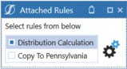
Figure 5.22
This Dashboard is created, as shown below.
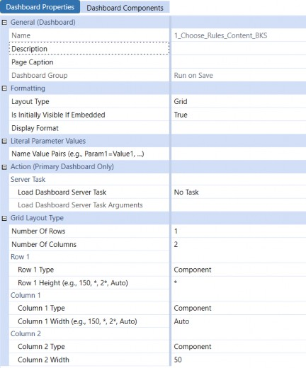
Figure 5.23
The header Dashboard, Cube View Dashboard, and main Dashboard follow the same structure as the previous example.
Here is how it looks when everything is done.
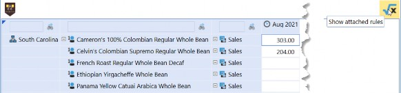
Figure 5.24
All Data Points Lead to Reporting and Analysis › Planning with Dashboards
Dashboard Design Mode
The Dashboard Design Mode can be used to fine-tune any Components (spacing, margins, etc.).
To launch a Dashboard in Design mode, select the required Dashboard and set it as the Default Dashboard (this applies to the Design Mode only).
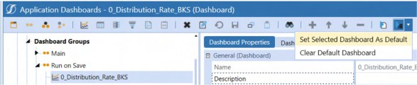
Figure 5.25
Once the Dashboard is set as default, launch the Design Mode using the database + media play icon.
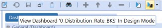
Figure 5.26
This launches the Dashboard in Design Mode. It is extremely useful because it shows the Components with a red triangle in the top corner. Selecting each Component within the design mode will navigate to the Dashboard it is a part of.
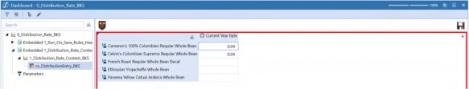
Figure 5.27
Parameters (if any) within the Dashboard can be viewed in this way, alongside their runtime values. Hovering on a parameter will show the value as a tooltip.
All Data Points Lead to Reporting and Analysis › Planning with Dashboards
Form Profile
Presenting this information to the Planner for data entry can be done in multiple ways.
A Workspace Workflow Profile
A Forms Workflow Profile
In this example, C&CCC’s Planners have multiple data entry Cube Views; hence, a Forms Workflow Profile option is needed. To do this, a Form Template with Form Type as Dashboard is created and added to a template profile.
While there are multiple Form Types (Cube View, Dashboard, and Spreadsheet), your author prefers to use the Dashboard Type when multiple Forms, or dependent Combo boxes (a Combo box driving another Combo box), or buttons need to be used in a Form.
This example uses a tabbed Dashboard to combine both examples as a single Dashboard.
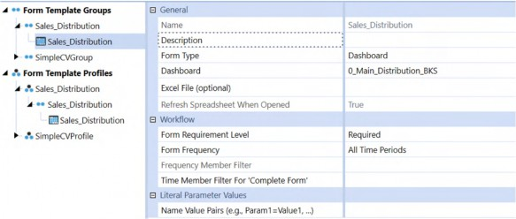
Figure 5.28
This profile is added as the Input Forms Profile Name in the Forms Workflow Child.
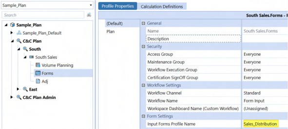
Figure 5.29
It will manifest in the Workflow as below:
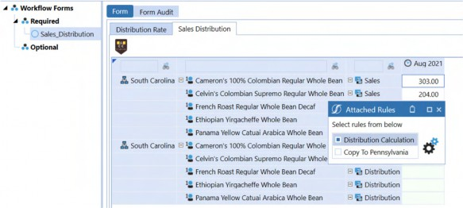
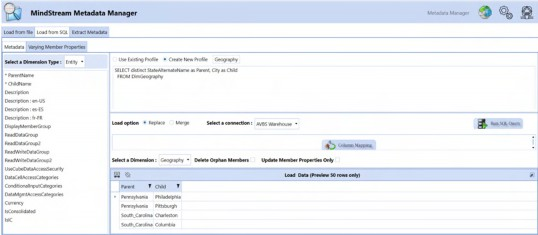
Note: Keep in mind that a refresh on a tabbed Report refreshes the whole Dashboard, not just the active Cube View. Once the refresh operation is complete, it will return to the first Cube View’s tab. To avoid this, buttons could appear (think of this as mimicking the tabbed Dashboard interface, but with a custom showing and hiding of controls) as tabs and refresh just the active Report. Some utilities like the MindStream Metadata Manager, which can be used to update Metadata (manually or automatically) from flat files and external relational tables, use this Method versus the regular tabbed Method. Figure 5.31 |
Figure 5.30 Planners can now select multiple rules and execute them.
All Data Points Lead to Reporting and Analysis
Performing Faster Data Exports from OneStream for External Consumption
Fast Data Exports that extract data from OneStream, through parallelism and in-memory processing, were introduced in the 5.3 release.
An in-memory Data Table is generated as a result of an FDX export and can be easily transformed if needed. This flexibility, when combined with parallelism, makes FDX export triumph over the regular Export Data Data Management sequences.
FDX APIs can extract data using:
Cube Views
Data Units
Stage Workflow Imports
External sources
All Data Points Lead to Reporting and Analysis › Performing Faster Data Exports from OneStream for External Consumption
When Should I Use FDX APIs?
OneStream has myriad data export use cases. The following list contains examples but is by no means exhaustive:
Exporting OneStream data (and metadata) for external systems
Internal OneStream data transfers (Planning Cubes with different Departments as Entity Dimensions moving data to Corporate Cubes with real Entity Dimensions)
Exporting dynamically-calculated results
Extracting data from external systems Who, after all, eschews better performance?
All Data Points Lead to Reporting and Analysis › Performing Faster Data Exports from OneStream for External Consumption
Which FDX APIs Should I Use?
C&CCC’s Planners need to send data from OneStream to external systems for invoicing purposes. They also need the information from Volume Sales Planning (Thing Planning) and Cube data to perform a reconciliation process outside OneStream, using external systems.
To extract Cube data, either of the following approaches can be used. Their selection is driven by how external systems handle Time Dimensions.
All Data Points Lead to Reporting and Analysis › Performing Faster Data Exports from OneStream for External Consumption › Which FDX APIs Should I Use?
FDXExecuteDataUnit or FDXExecuteDataUnitTimePivot
All Data Points Lead to Reporting and Analysis › Performing Faster Data Exports from OneStream for External Consumption › Which FDX APIs Should I Use? › FDXExecuteDataUnit or FDXExecuteDataUnitTimePivot
FDXExecuteDataUnit
FDX Data Unit extract API Methods do what they say: extract data from a OneStream Cube using its Data Units.
The Time Pivot API (FDXExecuteDataUnitTimePivot) Method acts like
FDXExecuteDataUnit with the difference that Time will appear as columns.
To illustrate, this use case will extract Sales data from the Cube so that it can be sent to an external relational table via an Extender Rule.
C&CCC’s database team set up a table for the Cube data that looks like the following.
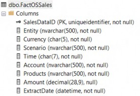
Figure 5.32
Dim strPlanYear As String = BRApi.Dashboards.Parameters.GetLiteralParameterValue(si, False, "paramstrPlanYear")
Dim lstOriginBase As List(Of String) = BRApi.Finance.Metadata.GetMembersUsingFilter(si, "Origin", "O#Top.Base", True, Nothing, Nothing).Select(Function(x) x.Member.Name).ToList()
Dim dt As datatable = BRApi.Import.Data.FdxExecuteDataUnit(si, "Sample", "E#Root.Base", "Local", ScenarioTypeId.Plan, "S#Plan", "T#" & strPlanYear & ".Months", "Periodic", True, "Account='Sales' AND Flow='Endbal_Input' AND " & SqlStringHelper.CreateInClause("Origin", lstOriginBase, True, True), 8, False)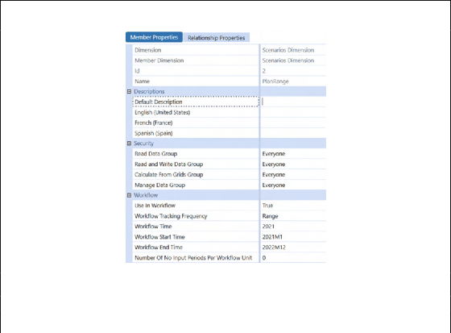
Note: For a Range Scenario like the one below…
Figure 5.33
…use the Start Time and End Time properties to generate the range of periods for this Scenario as follows.
The Extender Rule snippet above shows that FDXExecuteDataUnit can be used to retrieve data from the Sample Cube using a Member selection syntax similar to defining a data buffer with api.Data.GetDataBufferUsingFormula.
Dim intStartPeriod As Integer = BRApi.Finance.Scenario.GetWorkflowStartTime(si, BRApi.Finance.Metadata.GetMember(si, DimTypeId.Scenario, "PlanRange").Member.MemberId)
Dim intEndPeriod As Integer = BRApi.Finance.Scenario.GetWorkflowEndTime(si, BRApi.Finance.Metadata.GetMember(si, DimTypeId.Scenario, "PlanRange").Member.MemberId)
''' Select(Function(x) TimeDimHelper.GetNameFromId(x) is LINQ
''' GetIdsInRange function will give you a list of time members from start month to the end month
Dim lstPlanPeriods As List(Of String) = TimeDimHelper.GetIdsInRange(intStartPeriod, intEndPeriod).Select(Function(x) TimeDimHelper.GetNameFromId(x)).toList()As the Data Unit extraction Method can only work with Base Members, Parent Members cannot be used in the filter. In order to get all the Origin Members (or with any other Dimension), use GetMembersUsingFilter to get all Base Members.
BRApi.Import.Data.FdxExecuteDataUnit uses the following parameters:
SessionInfoCube Name
Entity Filter
Consolidation Name
Scenario Type ID
Scenario Filter
Time Filter
View Name
Suppress No Data – True/False
Filter – Use SQL
LIKEfilters on the DataTable on the Dimension that is not part of the Data UnitParallel Query Count – an integer for parallel threads (cannot exceed 128)
Log FDX Statistics – True/False
When data is extracted using FdxExecuteDataUnit, the following columns are generated.
Cube,Entity,Parent,Cons,Scenario,Time,View,Account,Flow,Origin,IC,UD1, UD2,UD3,UD4,UD5,UD6,UD7,UD8,Amount
Before this data can be moved to the Data Warehouse, the scope and the nature of the data must be changed.
All Data Points Lead to Reporting and Analysis › Performing Faster Data Exports from OneStream for External Consumption › Which FDX APIs Should I Use? › FDXExecuteDataUnit or FDXExecuteDataUnitTimePivot › FDXExecuteDataUnit
Renaming, Removing, and Adding Columns to a DataTable
Field names must match for a seamless import to the FactOSSales table. Rename Cons and UD1 columns to Currency and Products, respectively.
dt.Columns("Cons").ColumnName = "Currency" dt.Columns("UD1").ColumnName = "Products"
After the rename, remove the columns that C&CCC’s Data Warehouse team does not need.
dt.Columns.Remove("Cube") dt.Columns.Remove("Parent") dt.Columns.Remove("View") dt.Columns.Remove("Flow") dt.Columns.Remove("Origin") dt.Columns.Remove("IC")
Remove the UDs that are not used using a For loop.
For i As Integer = 2 To 8 dt.Columns.Remove("UD" & i)
NextC&CCC’s FactOSSales table leads with a UID field. Add a new column with Type GUID and make it the first column of the DataTable.
A new column for the extract date is added as the last column of the DataTable.
dt.Columns.Add("SalesDataID", GetType(Guid)).SetOrdinal(0) dt.Columns.Add("ExtractDate")
All Data Points Lead to Reporting and Analysis › Performing Faster Data Exports from OneStream for External Consumption › Which FDX APIs Should I Use? › FDXExecuteDataUnit or FDXExecuteDataUnitTimePivot › FDXExecuteDataUnit
Running Parallel Operations
We are going to add the Sales Data ID and Extract Time in parallel for efficiency.
To use parallel operations, Threading.Tasks Namespace is imported to the Business Rule, as shown below.
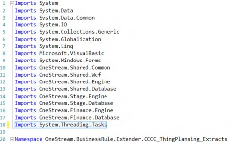
Figure 5.34
Dim currentTime As datetime = Date.Now dt.Columns("SalesDataID").ReadOnly = False dt.Columns("ExtractDate").ReadOnly = False Parallel.ForEach(dt.AsEnumerable(), Function(x)
x.BeginEdit
x("SalesDataID") = Guid.NewGuid x("ExtractDate") = currentTime x.EndEdit
End Function)
BRApi.Database.SaveCustomDataTable(si, "AVBS Warehouse", "FactOSSales", dt, True)The code performs the following:
The current date and time are captured.
SalesDataIDandExtractDatecolumns are set as writable.3.
SalesDataIDandExtractDatecolumns are edited in parallel. The resulting DataTable is then saved to the external database. FDXExecuteDataUnitTimePivot
If the target table has Time Members defined as columns, use the TimePivot variation of DataUnit
FDX.
FdxExecuteDataUnitTimePivot has a useGenericTimeColNames property that adds time intelligence to the data headers in the form of TYYYYMmm or a generic Time1, Time2, Timen value.
If useGenericTimeColNames is set to False, Dim dt As datatable =
BRApi.Import.Data.FdxExecuteDataUnitTimePivot(si, "Sample", "E#Root.Base", "Local", ScenarioTypeId.Plan, "S#Plan", "T#" & strPlanYear & ".Months", "Periodic", True, False, "Account='Sales' AND Flow='Endbal_Input' AND " & SqlStringHelper.CreateInClause("Origin", originBase, True, True), 8, False)
the following data is generated:
Cube,Entity,Parent,Cons,Scenario,View,Account,Flow,Origin,IC,UD1,UD2,U D3,UD4,UD5,UD6,UD7,UD8,T2021M1,T2021M2,T2021M3,T2021M4,T2021M5,T2021M6
,T2021M7,T2021M8,T2021M9,T2021M10,T2021M11,T2021M12
Sample,South_Carolina,,USD,Plan,Periodic,Sales,EndBal_Input,Forms,None
,10_010,None,None,None,None,None,None,None,0,0,0,0,0,0,0,303.000000000
,0.000000000,0.000000000,0.000000000,0.000000000
Sample,South_Carolina,,USD,Plan,Periodic,Sales,EndBal_Input,Forms,None
,10_020,None,None,None,None,None,None,None,0,0,0,0,0,0,0,204.000000000
,0.000000000,0.000000000,0.000000000,0.000000000
Sample,South_Carolina,,USD,Plan,Periodic,Sales,EndBal_Input,Import,Non e,10_020,None,None,None,None,None,None,None,38.168750000,38.168750000, 38.168750000,38.168750000,38.168750000,38.168750000,38.168750000,38.16
8750000,38.168750000,38.168750000,38.168750000,38.168750000If useGenericTimeColNames is set to True, Dim dt As datatable =
BRApi.Import.Data.FdxExecuteDataUnitTimePivot(si, "Sample", "E#Root.Base", "Local", ScenarioTypeId.Plan, "S#Plan", "T#" & strPlanYear & ".Months", "Periodic", True, True, "Account='Sales' AND Flow='Endbal_Input' AND " & SqlStringHelper.CreateInClause("Origin", originBase, True, True), 8, False)
the following data is generated:
Cube,Entity,Parent,Cons,Scenario,View,Account,Flow,Origin,IC,UD1,UD2,U D3,UD4,UD5,UD6,UD7,UD8,Time1,Time2,Time3,Time4,Time5,Time6,Time7,Time8
,Time9,Time10,Time11,Time12
Sample,South_Carolina,,USD,Plan,Periodic,Sales,EndBal_Input,Forms,None
,10_010,None,None,None,None,None,None,None,0,0,0,0,0,0,0,303.000000000
,0.000000000,0.000000000,0.000000000,0.000000000
Sample,South_Carolina,,USD,Plan,Periodic,Sales,EndBal_Input,Forms,None
,10_020,None,None,None,None,None,None,None,0,0,0,0,0,0,0,204.000000000
,0.000000000,0.000000000,0.000000000,0.000000000
Sample,South_Carolina,,USD,Plan,Periodic,Sales,EndBal_Input,Import,Non e,10_020,None,None,None,None,None,None,None,38.168750000,38.168750000,
38.168750000,38.168750000,38.168750000,38.168750000,38.168750000,38.16
8750000,38.168750000,38.168750000,38.168750000,38.168750000All Data Points Lead to Reporting and Analysis › Performing Faster Data Exports from OneStream for External Consumption › Which FDX APIs Should I Use?
FDXExecuteCubeView
Cube Views can be used to extract data from OneStream, and a Cube View comes in handy for the following Scenarios:
Extract Parent-level information (for Dimensions other than Entity)
Export dynamically-calculated Members
Export cell text information (only the ones attached to a View Member get exported)
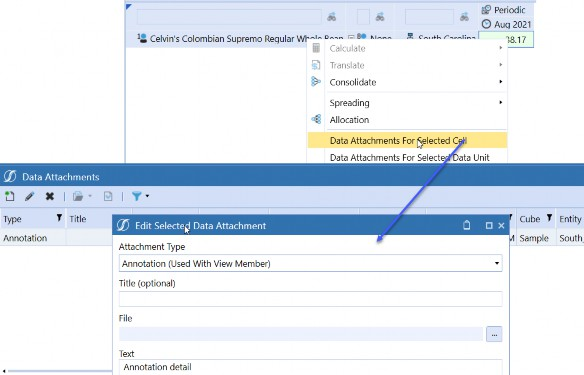
Figure 5.35
Dim dt As DataTable = BRApi.Import.Data.FdxExecuteCubeView(si, "Sales Rep", "Geography", "", "Scenarios", "", "", Nothing, True, False, "", 8, False)
We can extract data using a Cube View by providing the following parameters.
SessionInfoCube View name
Entity Dimension Name – will use the Cube View values if nothing is provided
Entity Filter – will use the Cube View values if nothing is provided
Scenario Dimension Name – will use the Cube View values if nothing is provided
Scenario Filter – will use the Cube View values if nothing is provided
Time Member Filter – will use the Cube View values if nothing is provided
A Name Value parameter object – this can be used if additional parameters are used in the Cube View
Include Text columns – True/False (can be used to show the Cell-level annotation)
Use Standard Fact Table fields – True/False (can be used to use the Dimension Names to be in the columns)
Filter – Use SQL
LIKEfilters on the DataTable on the Dimension that is not part of the Data UnitParallel Query Count – An integer for parallel threads (cannot exceed 128)
Log FDX Statistics – True/False
All Data Points Lead to Reporting and Analysis › Performing Faster Data Exports from OneStream for External Consumption › Which FDX APIs Should I Use? › FDXExecuteCubeView
What a Difference Switches and Levers Make
These seemingly minor Methods and properties can have a disproportionate effect on usefulness. Keep them in mind when going for that extra bit of functionality.
All Data Points Lead to Reporting and Analysis › Performing Faster Data Exports from OneStream for External Consumption › Which FDX APIs Should I Use? › FDXExecuteCubeView › What a Difference Switches and Levers Make
Extract Cell Text
Extract the cell text by using the includeCellTextCols option.
Dim dt As DataTable = BRApi.Import.Data.FdxExecuteCubeView(si, "Sales Info", "", "", "", "", "", Nothing, True, True, "", 8, False)
This code snippet directs the function to extract the cell text and use the standard fact tables.
Cube,Entity,Parent,Cons,Scenario,Time,View,Account,Flow,Origin,IC,UD1, UD2,UD3,UD4,UD5,UD6,UD7,UD8,RowHdr0ParentName,V2021M8,Col0Annotation,C ol0Assumptions,Col0AuditComment,Col0Footnote,Col0VarianceExplanation Sample,Pennsylvania,,Local,Actual,2021M8,Periodic,Sales,EndBal_Input,I mport,None,10_010,None,None,None,None,None,None,None,East,120.00000000 0,Annotation detail,,,, Sample,Pennsylvania,,Local,Actual,2021M8,Periodic,Sales,EndBal_Input,I mport,None,10_020,None,None,None,None,None,None,None,East,93.000000000
,,,,,
Sample,South_Carolina,,Local,Actual,2021M8,Periodic,Sales,EndBal_Input
,Import,None,10_020,None,None,None,None,None,None,None,South,803.00000 0000,,,,,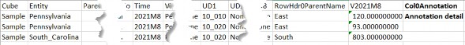
Figure 5.36
Since there was an annotation added to the View Member, the cell text got extracted.
All Data Points Lead to Reporting and Analysis › Performing Faster Data Exports from OneStream for External Consumption › Which FDX APIs Should I Use? › FDXExecuteCubeView › What a Difference Switches and Levers Make
Difference Between Standard Fact Columns and Cube View Columns
When the standard fact column (10th parameter) is not used, the column headers are different and there are extra columns.
PovCubeName,Pov00EntityName,Pov01ConsolidationName,Pov02ScenarioName,P ov03TimeName,Pov04ViewName,Pov05AccountName,Pov06FlowName,Pov07OriginN ame,Pov08ICName,Pov09UD1Name,Pov10UD2Name,Pov11UD3Name,Pov12UD4Name,Po v13UD5Name,Pov14UD6Name,Pov15UD7Name,Pov16UD8Name,RowHdr0_Entity,RowHd r0ParentName,RowHdr1_UD1,RowHdr2_UD8,ColVal0_2021M8,Col0Annotation,Col 0Assumptions,Col0AuditComment,Col0Footnote,Col0VarianceExplanation Sample,Total_Geography,Local,Actual,2021M8,Periodic,Sales,EndBal_Input
,Import,None,None,None,None,None,None,None,None,None,Pennsylvania,East
,10_010,None,120.000000000,Annotation detail,,,, Sample,Total_Geography,Local,Actual,2021M8,Periodic,Sales,EndBal_Input
,Import,None,None,None,None,None,None,None,None,None,Pennsylvania,East
,10_020,None,93.000000000,,,,,
Sample,Total_Geography,Local,Actual,2021M8,Periodic,Sales,EndBal_Input
,Import,None,None,None,None,None,None,None,None,None,South_Carolina,So uth,10_020,None,803.000000000,,,,,All Data Points Lead to Reporting and Analysis › Performing Faster Data Exports from OneStream for External Consumption › Which FDX APIs Should I Use? › FDXExecuteCubeView › What a Difference Switches and Levers Make
Entity, Scenario and Time Member Filters
Entity, Scenario, and Time Member Filters can be used to extract data from a Cube View.
However, use caution when using these Member Filters. If these Members are already mentioned in the Cube View, passing a different set will not override what is already in the Cube View.
Let us look at what happens using the Cube View from the previous example.
Using the sample Cube View, here are the following Dimension selections in the Row definitions.
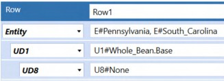
Figure 5.37
What happens if FdxExecuteCubeView is executed to extract the Base Members of East?
Dim dt As DataTable = BRApi.Import.Data.FdxExecuteCubeView(si, "Sales Info", "Geography", "E#East.base", "", "", "", Nothing, True, True, "", 8, False)
When the Rule runs, the Cube View gets called four times (four Base Members for East).
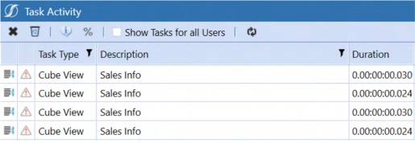
Figure 5.38
Did it work?
The code extracts the data for Pennsylvania and South Carolina four times, replicating the data.
Cube,Entity,Parent,Cons,Scenario,Time,View,Account,Flow,Origin,IC,UD1, UD2,UD3,UD4,UD5,UD6,UD7,UD8,RowHdr0ParentName,VPeriodic,Col0Annotation
,Col0Assumptions,Col0AuditComment,Col0Footnote,Col0VarianceExplanation Sample,Pennsylvania,,Local,Actual,2021M8,Periodic,Sales,EndBal_Input,I mport,None,10_010,None,None,None,None,None,None,None,East,120.00000000 0,,,,,
Sample,Pennsylvania,,Local,Actual,2021M8,Periodic,Sales,EndBal_Input,I mport,None,10_020,None,None,None,None,None,None,None,East,93.000000000
,,,,,
Sample,South_Carolina,,Local,Actual,2021M8,Periodic,Sales,EndBal_Input
,Import,None,10_020,None,None,None,None,None,None,None,South,803.00000 0000,,,,,
Sample,Pennsylvania,,Local,Actual,2021M8,Periodic,Sales,EndBal_Input,I mport,None,10_010,None,None,None,None,None,None,None,East,120.00000000 0,,,,,
Sample,Pennsylvania,,Local,Actual,2021M8,Periodic,Sales,EndBal_Input,I mport,None,10_020,None,None,None,None,None,None,None,East,93.000000000
,,,,,
Sample,South_Carolina,,Local,Actual,2021M8,Periodic,Sales,EndBal_Input
,Import,None,10_020,None,None,None,None,None,None,None,South,803.00000 0000,,,,,
Sample,Pennsylvania,,Local,Actual,2021M8,Periodic,Sales,EndBal_Input,I mport,None,10_010,None,None,None,None,None,None,None,East,120.00000000 0,,,,,
Sample,Pennsylvania,,Local,Actual,2021M8,Periodic,Sales,EndBal_Input,I mport,None,10_020,None,None,None,None,None,None,None,East,93.000000000
,,,,,
Sample,South_Carolina,,Local,Actual,2021M8,Periodic,Sales,EndBal_Input
,Import,None,10_020,None,None,None,None,None,None,None,South,803.00000 0000,,,,,
Sample,Pennsylvania,,Local,Actual,2021M8,Periodic,Sales,EndBal_Input,I mport,None,10_010,None,None,None,None,None,None,None,East,120.00000000 0,,,,,
Sample,Pennsylvania,,Local,Actual,2021M8,Periodic,Sales,EndBal_Input,I mport,None,10_020,None,None,None,None,None,None,None,East,93.000000000
,,,,,
Sample,South_Carolina,,Local,Actual,2021M8,Periodic,Sales,EndBal_Input
,Import,None,10_020,None,None,None,None,None,None,None,South,803.00000 0000,,,,,Entity, Scenario, and Time are part of the Data Unit, and in this case, it is no different. If two different Scenarios are passed for the override, it will run the Cube View eight times (four Entities and two Scenarios), again with redundant data.
So, when and how then should this override function be used?
To make use of these three overrides, employ the following parameters.
FDXEntityFDXScenarioFDXTime
Add these parameters to the POV (Member expansion is not supported), as shown below.
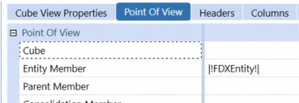
Figure 5.39
Dim dt As DataTable = BRApi.Import.Data.FdxExecuteCubeView(si, "Sales Info", "Geography", "E#South_Carolina", "", "", "", Nothing, True, True, "", 8, False)
Running that code results in just one Entity.
Cube,Entity,Parent,Cons,Scenario,Time,View,Account,Flow,Origin,IC,UD1, UD2,UD3,UD4,UD5,UD6,UD7,UD8,RowHdr0ParentName,VPeriodic,Col0Annotation
,Col0Assumptions,Col0AuditComment,Col0Footnote,Col0VarianceExplanation Sample,South_Carolina,,Local,Actual,2021M8,Periodic,Sales,EndBal_Input
,Import,None,10_020,None,None,None,None,None,None,None,South,803.00000 0000,,,,,If a Member expansion function is passed, the Cube View will be queried four times.
Dim dt As DataTable = BRApi.Import.Data.FdxExecuteCubeView(si, "Sales Info", "Geography", "E#East.base", "", "", "", Nothing, True, True, "", 8, False)
Only the Cube POV’s Entity will be picked up, despite the Member expansion.
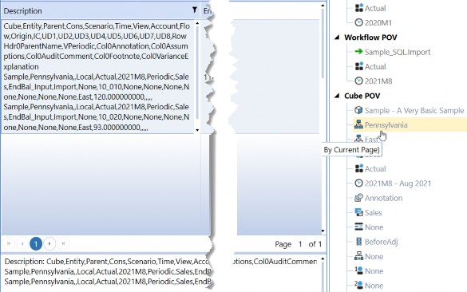
Figure 5.40
Entity can be overridden to support Member expansion using the NameValueFormatBuilder object. To do this, define a parameter in the Cube View.
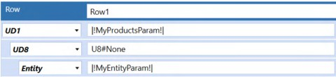
Figure 5.41
This example shows two parameters defined in the Cube View: one for UD1 and the other for Entity.
Dim nvb As New NameValueFormatBuilder() nvb.NameValuePairs.Add("MyEntityParam", "E#Total_Geography.base") nvb.NameValuePairs.Add("MyProductsParam", "U1#Total_Products.base") Dim dt As DataTable = BRApi.Import.Data.FdxExecuteCubeView(si, "Sales Info", "Geography", "", "", "", "", nvb, True, True, "", 8, False)
)By defining a Name Value Pair format builder, the Entity and UD1 parameter used in the Cube View are passed and are then expanded to contain all of the Members in E#Total_Geography and U1#Total_Products.
The NameValueFormatBuilder object can then be passed as the eighth parameter to the function, executing the Cube View read just once, putting the expanded results into the DataTable.
All Data Points Lead to Reporting and Analysis › Performing Faster Data Exports from OneStream for External Consumption › Which FDX APIs Should I Use? › FDXExecuteCubeView
Multiple Column Cube Views
The FDXExecuteCubeView function does not easily support multiple column Cube Views.
If the Cube View used in the previous examples is changed to have a dynamic Member expansion that returns multiple columns:
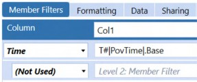
Figure 5.42
As expected, the Data Explorer will show you all the columns based on your POV (2021Q3).
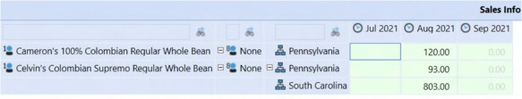
Figure 5.43
And what happens when FDXExecuteCubeView is executed? Data from the correct corresponding months are extracted. However, the Time field contains 2021Q3, which is wrong, because the data values are monthly.
Cube,Entity,Parent,Cons,Scenario,Time,View,Account,Flow,Origin,IC,UD1, UD2,UD3,UD4,UD5,UD6,UD7,UD8,RowHdr2ParentName,V2021M7,Col0Annotation,C ol0Assumptions,Col0AuditComment,Col0Footnote,Col0VarianceExplanation,V 2021M8,Col1Annotation,Col1Assumptions,Col1AuditComment,Col1Footnote,Co l1VarianceExplanation,V2021M9,Col2Annotation,Col2Assumptions,Col2Audit Comment,Col2Footnote,Col2VarianceExplanation Sample,Pennsylvania,,Local,Actual,2021Q3,Periodic,Sales,EndBal_Input,I mport,None,10_010,None,None,None,None,None,None,None,East,0.000000000,
,,,,,120.000000000,Annotation detail,,,,,0.000000000,,,,,
Sample,Pennsylvania,,Local,Actual,2021Q3,Periodic,Sales,EndBal_Input,I mport,None,10_020,None,None,None,None,None,None,None,East,0.000000000,
,,,,,93.000000000,,,,,,0.000000000,,,,,
Sample,South_Carolina,,Local,Actual,2021Q3,Periodic,Sales,EndBal_Input
,Import,None,10_020,None,None,None,None,None,None,None,South,0.0000000 00,,,,,,803.000000000,,,,,,0.000000000,,,,,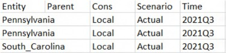
Figure 5.44
The above table’s Time field shows the POV’s value (2021Q3). You will have to use the value columns (starting with a V) to figure out what the Time is.
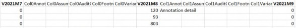
Figure 5.45
If multiple Dimensions are used in the columns, the Rule will fail as it is now trying to add three columns called VPeriodic to the DataTable.
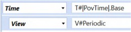
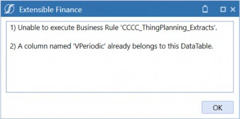
Figure 5.46
To get around this issue, Time could be moved to the second column Dimension definition. Doing so will result in View being picked up from the POV.
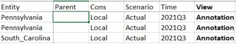
Figure 5.47
The values columns will not even show what View was used to pull this Cube View. Whichever View Dimension was used for which column information is now lost.
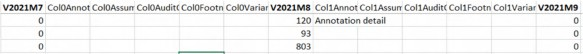
Figure 5.48
| Note: Do not use multiple column (a column with Member function included) Cube Views to extract data. |
All Data Points Lead to Reporting and Analysis › Performing Faster Data Exports from OneStream for External Consumption › Which FDX APIs Should I Use?
FDXExecuteStageTargetTimePivot
All Data Points Lead to Reporting and Analysis › Performing Faster Data Exports from OneStream for External Consumption › Which FDX APIs Should I Use? › FDXExecuteStageTargetTimePivot
Exporting Stage Data
In this use case, Volume Sales information (Thing Planning) now needs to be extracted. This can be done in two ways:
Use data in Stage
Directly pull from the Plan tables
Suppose all the required details (from the Plan table) were used in the Connector Rule that loads Thing Planning data to the Cube. If so, use FDXExecuteStageTargetTimePivot. This Method will require the following parameters to pull the data that went to the Cube from the Stage.
Parent Workflow Profile name (If there are multiple profiles under the Parent, use a filter)
Scenario Name
Start Time
End Time
If there are no attributes assigned in the data source, use
Falsefor the includeAttributes parameterUse generic Time columns –
True/FalseFilter – Use SQL
LIKEfilters on the DataTable for the Dimensions that are not part of the Data UnitParallel Query Count – An integer for parallel threads (cannot exceed 128)
Log FDX Statistics –
True/False
The below will pull data for Volume Planning.
Dim dt As DataTable = BRApi.Import.Data.FdxExecuteStageTargetTimePivot(si, "C&C Plan",
"Plan", "2021M1", "2021M12", False, True, "Lb LIKE '%.Volume Planning'", 8, False)The WFProfileName – Volume Planning – is added as a Label in the data source and used to filter the Volume Planning Workflows.
Running the code produces the following data:
Rt,Si,Lb,Tv,EtT,PrT,CnT,SnT,VwT,AcT,FwT,OgT,IcT,U1T,U2T,U3T,U4T,U5T,U6
T,U7T,U8T,Time1,Time2,Time3,Time4,Time5,Time6,Time7,Time8,Time9,Time10
,Time11,Time12 0,Plan,East Sales.Volume
Planning,,Pennsylvania,,Local,Plan,Periodic,Distribution,EndBal_Input, Import,None,20_010,,,,,,,,0,0,0,0,0,0,0,0,8.200000000,9.122500000,9.02 0000000,8.200000000
0,Plan,East Sales.Volume Planning,,Pennsylvania,,Local,Plan,Periodic,Distribution,EndBal_Input, Import,None,40_010,,,,,,,,0,0,0,0,0,0,0,0,8.200000000,9.122500000,9.02 0000000,8.200000000
0,Plan,East Sales.Volume Planning,,Pennsylvania,,Local,Plan,Periodic,Sales,EndBal_Input,Import, None,20_010,,,,,,,,0,0,0,0,0,0,0,0,458.333333333,458.333333333,458.333 333333,458.333333333All Data Points Lead to Reporting and Analysis › Performing Faster Data Exports from OneStream for External Consumption › Which FDX APIs Should I Use?
FdxExecuteWarehouseTimePivot
All Data Points Lead to Reporting and Analysis › Performing Faster Data Exports from OneStream for External Consumption › Which FDX APIs Should I Use? › FdxExecuteWarehouseTimePivot
Exporting the Plan Table to an External Database
This example will pull directly from the XFW_TLP_Plan table as all the information requested by C&CCC’s DW team is not present in Stage.
Figure 5.49
The Method to perform the retrieval of a Time-based multicolumn fact table is called
FdxExecuteWarehouseTimePivot.
It requires the following parameters.
SessionInfoParallel item’s column name – any column in a table can be used to parallelize the code execution
List of distinct items from the parallel column – used for parallelization
SELECTStatementQueried tables– if
JOINstatements are being used, include the keywordFROMhere, e.g.,
FROM tablename)
WHEREclause – define filters (Do not use the keywordWHERE)Group By – if performing Aggregations (
SUM,AVG, etc.,) indicate them here by using
GROUP BY
Order by – if sorting records, list the columns here using
ORDER BYTime column name – define the Time column name here (Keep in mind that this column must be a Text-type column (
char,varchar,nvarchar))List of distinct Time Members
Pivot Measure column (this is the column that has numbers in it)
Use generic Time columns –
True/FalseDatabase location – the external table name or “App” for OS internal application tables or “Framework” for OS system tables
Filter – Use SQL
LIKEfilters on the DataTable on the Dimension that is not part of the Data UnitParallel Query Count – An integer for parallel threads (this cannot exceed 128)
Log FDX Statistics –
True/False
Dim strPlanYear As String = BRApi.Dashboards.Parameters.GetLiteralParameterValue(si, False, "paramPlanYear")
Dim lstAcc As New List(Of String)
Dim lstPlanPeriods As New List(Of String)Get the plan year from the Literal Parameter paramPlanYear and create two List objects. The latter two will be used for parallelism (Account) and pivot (Time).
Using dbConn As DbConnInfo = BRApi.Database.CreateApplicationDbConnInfo(si)
lstAcc = BRApi.Database.ExecuteSqlUsingReader(dbConn, "SELECT DISTINCT Account FROM XFW_TLP_Plan WHERE WFTimeName='" & strPlanYear & "'", True).AsEnumerable().Select(Function(x) x("Account").toString()).ToList()
lstPlanPeriods = BRApi.Database.ExecuteSqlUsingReader(dbConn, "SELECT DISTINCT 'M'+FORMAT(Period, '00') as Period FROM XFW_TLP_Plan
WHERE WFTimeName='" & strPlanYear & "'", True).AsEnumerable().Select(Function(x) x("Period").toString()).ToList()
End UsingA database connection is initiated to get the distinct Account and Period values.
SQL gets the distinct list of Accounts present in the Plan table, and a LINQ query is used to convert the rows from the DataTable to a List.
SQL gets the distinct list of Periods present in the Plan table. Note that months are converted to Text and are formatted as MM.
If they are not formated as MM, the following will happen: Month 2 is going to get Month 10’s data, Month 3 will get Month 11’s, Month 4 will get Month 12’s, and Month 5 will get Month 2’s.
Confused? Your author spent quite a bit of time trying to figure out what was going on. It is the omnipresent issue of Periods following the Mm and Mmm naming pattern, (e.g., M1 and M10).
This can be seen in SQL:
Figure 5.50
When Period is Text, SQL arranges them just as it arranges any Text column: M10 comes after M1. Forcing a FORMAT command to make the Period number two digits, with a leading “0” for Periods 1 through 9, fixes the issue.
Figure 5.51
Dim selectStmt As New Text.StringBuilder selectStmt.AppendLine("SELECT NEWID() as VolumePriceID, Entity, WFScenarioName as Scenario, Account, Code1 as Product,") selectStmt.AppendLine("Code2 as City, Code3 as Division, Code4 as 'Sales Rep',")
selectStmt.AppendLine("Amount, GETDATE() as ExtractDate, 'M'+FORMAT(Period, '00') as Period")
In the StringBuilder’s SQL, a new GUID is generated using the NEWID() function (note that the rows do not need to be edited to add a GUID like the FDXExecuteDataUnit or FDXExecuteDataUnitTimePivot examples).The current date populates the extract date column, with the Period as two-digit months prefixed with “M”.
Dim strSelectFrom As String = "FROM XFW_TLP_Plan" ' Need FROM Dim strSelectCriteria As String = "Account='Price' AND
WFScenarioName='Plan' AND WFTimeName='" & strPlanYear & "'" ' do not use WHERE
Dim strGroupByStmt As String = "" ' Need Group by
Dim strOrderByStmt As String = "Order by Entity" ' Need ORDER byThe table name is defined in the strSelectFrom string variable.
Since only Price data is being sent, that selection is defined in strSelectCriteria. An ORDER BY statement is used to order the rows by Entity in strGroupByStmt.
Dim dt As DataTable = BRApi.Import.Data.FdxExecuteWarehouseTimePivot(si, "Account", lstAcc,_ selectStmt.ToString, strSelectFrom, strSelectCriteria, strGroupByStmt, strOrderByStmt, "Period", _ lstPlanPeriods, "Amount", True, "App", "", 8, True) BRApi.Database.SaveCustomDataTable(si, "AVBS Warehouse", "FactOSVolumePrice", dt, True)
FDXExecuteWarehouseTimePivot is used to generate a DataTable which is saved to the external table using SaveCustomDataTable.All Data Points Lead to Reporting and Analysis › Performing Faster Data Exports from OneStream for External Consumption › Which FDX APIs Should I Use? › FdxExecuteWarehouseTimePivot
Extract OneStream Dimension to an External Database or How to Generate a Custom FdxExecuteWarehouse Function
Some Dimensions will exist only in OneStream, (e.g., Scenario). In these cases, if downstream systems consume OneStream data, Scenario’s metadata will have to be sent along with the data.
FDXExecuteWarehouseTimePivot’s name implies that it needs a Time column to perform a pivot. This poses a significant problem when the target system is a single-column Fact table.
The solution is to make FDXExecuteWarehouseTimePivot act like it does not have to pivot on Time.
Dim lstProducts As List(Of String) = BRApi.Finance.Metadata.GetMembersUsingFilter(si, "Products", "U1#Total_Products.DescendantsInclusive", True).Select(Function(x) x.Member.MemberId.ToString).toList()
Dim lstPlanPeriods As New List(Of String) From {"Time1"}
GetMembersUsingFilter gets the Member IDs of the inclusive descendants of
Total_Products so that the Parent Product Members can act as the parallel item.The Method requires a Time Dimension column and Time Members to work. Since that requirement cannot be bypassed, create a ghost column with a single value in it, in the List lstPlanPeriods.
Dim selectStmt As New Text.StringBuilder selectStmt.AppendLine("WITH ProductTree AS")
selectStmt.AppendLine("(SELECT ChildId, ParentId, 'Time1' as Period, 1 as Amount FROM Relationship MbrRelation WITH (NOLOCK), Member Mbr WITH (NOLOCK), Dim AppDimension WITH (NOLOCK)") selectStmt.AppendLine("WHERE Mbr.MemberId=MbrRelation.ParentId and") selectStmt.AppendLine("Mbr.Name = 'Total_Products' and") selectStmt.AppendLine("MbrRelation.DimId=AppDimension.DimId and") selectStmt.AppendLine("AppDimension.Name = 'Products'") selectStmt.AppendLine("UNION ALL ")
selectStmt.AppendLine("SELECT MbrRelation.ChildId, MbrRelation.ParentId, 'Time1' as Period, 1 as Amount") selectStmt.AppendLine("FROM Relationship as MbrRelation WITH (NOLOCK), ProductTree, Dim AppDimension WITH (NOLOCK)") selectStmt.AppendLine("WHERE ProductTree.ChildID = MbrRelation.ParentId and") selectStmt.AppendLine("MbrRelation.DimId=AppDimension.DimId and") selectStmt.AppendLine("AppDimension.Name = 'Products')") selectStmt.AppendLine("SELECT Mbr.Name as Child, ParentMbr.Name as Parent, Mbr.Description, Period, Amount")Create the StringBuilder selectStmt to capture the required SQL.
This code snippet uses Recursive Common Table Expressions to get the Members of the Product Dimension in a Parent-Child format.
The following tables are used to generate the required Parent-Child format:
Relationship – this table holds the relationship between Members (Parent-Child).
Member – this table holds Member-related properties (Name, ID, Description, Security).
Dim – this table holds the Dimension IDs and their Types.
Note: SQL NOLOCK hint must be used when you are going against Application or System tables. |
Note the 'Time1' as Period, 1 as Amount SELECT criteria to create two ghost columns (Period with a default value of Time1, and Amount with a default value of 1).
All the tables required to fetch the SELECT statements are mentioned in the FROM string to perform an implied JOIN.
Criteria is mentioned to pull the data from the CTE, and it is joined with the Member table (twice – once to get the Child’s Name, and another time to get the Parent’s name).
Dim strSelectFrom As String = "FROM ProductTree, Member Mbr WITH (NOLOCK), Member ParentMbr WITH (NOLOCK)" ' Need FROM
Dim strSelectCriteria As String = "ProductTree.ChildId=Mbr.MemberId AND ProductTree.ParentId=ParentMbr.MemberId" ' Cannot use WHERE
Dim strGroupByStmt As String = "" ' Need Group by Dim strOrderByStmt As String = "" ' Need ORDER byGenerate a new DataTable with the SQL, removing the Time column.
Dim dt As DataTable = BRApi.Import.Data.FdxExecuteWarehouseTimePivot(si, "ParentId", lstProducts, _ selectStmt.ToString, strSelectFrom, strSelectCriteria, strGroupByStmt, strOrderByStmt, "Period", _
lstPlanPeriods, "Amount", True, "App", "", 8, False) dt.Columns.Remove("Time1")Use an external database connection to delete the existing Product Dimension. Once deleted, save the new information to the external table DimOSProduct.
Using dbConn As DbConnInfo = BRApi.Database.CreateExternalDbConnInfo(si, "AVBS Warehouse")
BRApi.Database.ExecuteActionQuery(dbConn, "DELETE FROM DimOSProduct", True, True)
End Using
BRApi.Database.SaveCustomDataTable(si, "AVBS Warehouse", "DimOSProduct", dt, True)After the execution of this code, DimOSProduct is as shown below:
Figure 5.52
The FDX APIs support multiple export Types: Cube Data, Specialty Data, and Cube Metadata for consumption by external systems in an elegant, efficient, and unified manner.
All Data Points Lead to Reporting and Analysis › Analyzing Large Volumes of Data, Both Related and Unrelated, to OneStream
What is BI Blend?
BI Blend is a read-only columnar database, or more properly, it is a framework and architecture for creating columnar databases using OneStream dimensionality. Once created, BI Blend differs from the traditional Cube in that Planners cannot enter data, nor can they consume the data in a traditional Cube View. The concepts of aggregating dimensionality and calculations (extremely limited in the case of BI Blend, and in a different form than the Cube’s or Specialty Planning’s Calculation Engines and languages) are the same; practically everything else is different.
Architectural differences aside, its purpose is the same as OneStream’s other Engines: provide a way for Planners to analyze and understand data.
In contrast to a Cube or Specialty Planning’s Register, think of a BI Blend database as a write-once database. When a “Blend” process is completed, it completely overwrites the existing table with new information; there is no concept of load and modify.
All Data Points Lead to Reporting and Analysis › Analyzing Large Volumes of Data, Both Related and Unrelated, to OneStream
How Can I Use BI Blend?
C&CCC has, in reaction to the ruthlessly competitive coffee market, decided to use their agribusiness domain expertise to expand into the burgeoning localtarian Farmers Markets movement. This use case will use C&CCC’s OneStream application to perform analysis on Farmers Markets in two states (your author jokes that he is a farmer first and a OneStream practitioner second, so his bias towards farming examples in this chapter is understandable). Data will be retrieved using a REST API USDA National Farmers Market Directory API.
A BI Blend table (or simply put, BI Blend) must be generated through a Workflow. Blend can be a Workflow Profile Child or can even be an entire Workflow review tree like the one below for Blend only.
Figure 5.53
There are three Types of Workflow names available for Blend operations.
Blend
Blend – Workspace (A Dashboard can be added after Blend operations)
Workspace – Blend (A Dashboard to view/upload files before Blend operations)
Once a Workflow Profile is defined as Blend (or any other related Blend Type), the parameters for BI Blend are defined under BI Blend Settings.
Figure 5.54
All Data Points Lead to Reporting and Analysis › Analyzing Large Volumes of Data, Both Related and Unrelated, to OneStream › How Can I Use BI Blend?
What are the BI Blend Settings?
In contrast to practically every other facet of OneStream, BI Blend is a code-free Component, and its configuration is enacted through simple settings.
There are three types of settings:
Data Controls
Aggregation Controls
Performance Controls
All Data Points Lead to Reporting and Analysis › Analyzing Large Volumes of Data, Both Related and Unrelated, to OneStream › How Can I Use BI Blend? › What are the BI Blend Settings?
Data Controls
Data Controls are the building blocks to BI Blend that decide where the Blend is going to be created and how many columns it will have.
All Data Points Lead to Reporting and Analysis › Analyzing Large Volumes of Data, Both Related and Unrelated, to OneStream › How Can I Use BI Blend? › What are the BI Blend Settings? › Data Controls
Measure Type
Measure Type is the control responsible for the layout of Time columns in the Blend. Even though the name says Measure – it controls Time.
Figure 5.55
There are three Types: TimeSource, TimeWFView, and TimeWFViewAV.
TimeSource – BI Blend looks at the data (depending on the data source configuration) and generates the required Time columns.
TimeWFView – BI Blend looks at the Scenario’s Workflow frequency and generates the Time columns.
TimeWFViewAV – BI Blend uses the Attribute Value Dimension (1-12) with each Attribute Value Dimension associated with a Time column. Think of this like a traditional Cube Matrix Data Source.
All Data Points Lead to Reporting and Analysis › Analyzing Large Volumes of Data, Both Related and Unrelated, to OneStream › How Can I Use BI Blend? › What are the BI Blend Settings? › Data Controls
Content Type
Content Type is the control responsible for the layout of the rest of the metadata columns in the Blend except for the following default columns.
Rt
SourceID – coming from the data source
Label
TextValue
AccountType
There are four content Types to pick from:
Figure 5.56
TargetCubeDims – Along with the defaults, the Blend table will only have the Dimensions present in the Cube.
TargetCubeDimsSource – Along with the defaults, the Blend table will have the Cube Dimensions and the source Dimensions from the source.
TargetCubeDimsAttributes – Along with the defaults, the Blend table will have the Cube Dimensions and the attribute Dimensions (if used in the data source).
TargetCubeDimsAll – The Blend table will have all the columns (defaults, Cube, source, and attribute Dimensions)
All Data Points Lead to Reporting and Analysis › Analyzing Large Volumes of Data, Both Related and Unrelated, to OneStream › How Can I Use BI Blend? › What are the BI Blend Settings? › Data Controls
Star Schema
BI Blend can create a Star Schema of the host OneStream Application with data and metadata. On generating a Star Schema, OneStream will create the following:
1. Fact table; named as
BIB_<AppName>_<WorkflowName>_<WFScenarioName>_<WFTimeName>
Dimension tables; named as
BIB_<AppName>_<WorkflowName>_<WFScenarioName>_<WFTimeName>_Dim<Stag eDimensionName>(Etfor Entity,Acfor Account, and so on)A View that joins the Dimensions with fact tables; named as
v_<FactTableName>
All Data Points Lead to Reporting and Analysis › Analyzing Large Volumes of Data, Both Related and Unrelated, to OneStream › How Can I Use BI Blend? › What are the BI Blend Settings? › Data Controls
Database Location
Blend information cannot reside in the Application database. Configure an external connection for BI Blend.
OneStream will create the tables (and the view uses Star Schema) needed in that external connection. Multiple databases/connections are not required for each Blend Scenario.
All Data Points Lead to Reporting and Analysis › Analyzing Large Volumes of Data, Both Related and Unrelated, to OneStream › How Can I Use BI Blend? › What are the BI Blend Settings? › Data Controls
Data Explosion Adjustor
Despite its dramatic name, there is little to do with this setting because OneStream estimates the size of the rows after the first learning mode.
The first execution of the Blend profile (the Analytic Blend log file (.xfl text file)) executes a learning mode to figure out the explosion and adjusts this number accordingly.
Figure 5.57
Figure 5.58
All Data Points Lead to Reporting and Analysis › Analyzing Large Volumes of Data, Both Related and Unrelated, to OneStream › How Can I Use BI Blend? › What are the BI Blend Settings? › Data Controls
Column Aliases
Default Stage columns can be aliased to User-friendly descriptions. In C&CCC’s case the following is used as Column Alias
EtT=Geography, AcT=MarketID, Si=Address, Lb=MarketName, A1=ZipCode, A2=Measure, A3=GoogleLink, A4=Products, A5=Schedule
After processing the Blend, here is the output from the underlying fact table.
Figure 5.59
| Note: You cannot use spaces in the aliases; if they are used, BI Blend will ignore them. |
All Data Points Lead to Reporting and Analysis › Analyzing Large Volumes of Data, Both Related and Unrelated, to OneStream › How Can I Use BI Blend? › What are the BI Blend Settings?
Aggregation Controls
Aggregation controls help you control Aggregation. It also contains a very important item in the whole Blend creation process: Blend Unit.
Figure 5.60
All Data Points Lead to Reporting and Analysis › Analyzing Large Volumes of Data, Both Related and Unrelated, to OneStream › How Can I Use BI Blend? › What are the BI Blend Settings? › Aggregation Controls
Translate
Simple FX translations can be performed in Blend.
Figure 5.61
Since there is nothing to translate in the Farmers Market directory, it is left as NotUsed.
All Data Points Lead to Reporting and Analysis › Analyzing Large Volumes of Data, Both Related and Unrelated, to OneStream › How Can I Use BI Blend? › What are the BI Blend Settings? › Aggregation Controls
Blend Unit Dimension Token
Blend Unit is similar to a Data Unit, although that similarity starts and ends with the fact that it defines a logical coupling (grouping) of Members within the data.
If your data contains Members other than what is defined (Members in a source file or table are filtered using the Aggregation information of the Blend Unit) in the Blend Dimension Aggregation, these data values are skipped.
| Note: No error message is provided if a Member is skipped from the data because of the Blend Unit. |
Blend Unit is used to group the data, and that grouping leads to partitions (along with Source ID); partitions lead to parallel Aggregations; parallelism drives performance; performance drives happiness, and we all want to be as happy as we can be.
Any Dimension (except IC and Account) can be a Blend Unit. However, only one Dimension can be the Blend Unit.
Blend Unit plays a role in aggregating the Blend Dimension. It must have a corresponding
Aggregation Info property other than NotUsed.
Read further about the Blend Unit in the BI Blend Platform Guide.
Figure 5.62
Despite the discussion of grouping and partitions, sometimes an Aggregation on the Blend Unit is not needed.
Consider the Scenario where C&CCC wants to analyze their hourly transactions (all sent to OneStream as flat files) and a summarized level of this information is loaded to the Cube.
In this Scenario, instead of loading millions of records to analyze a few columns, that data could be loaded to a Blend database, and then BI Blend can be used as the source for loading to the Cube.
Summarizing data on a columnar database is blazingly fast.
In this Scenario, Stage is not being burdened (refer to the topic Supplemental Data Analysis Without Wreaking Havoc on Stage in the next chapter) with millions of records, as this data is stored only in Blend.
With Blend as the source, the Stage Engine will hand over everything to the BI Blend cache once the Transformation and Derivative Rules are executed.
Figure 5.63
In this case, aggregated data that corresponds to Parents in Cube Dimensions are not needed because you cannot load data to upper-level Members in the Cube. Instead, pick a static Dimension (only one Member from that Dimension is present in the data) to be your Blend Unit Dimension.
In this example, a fixed Flow Dimension Member EndBal_Input is being loaded.
Figure 5.64
If there are multiple Members of the Flow Dimension present in the data, they are ignored as the
Flow Aggregation Info property mentions only EndBal_Input.
There is a performance tradeoff because the absence of grouping prevents parallelism. Regardless, BI Blend performs the heavy lifting.
All Data Points Lead to Reporting and Analysis › Analyzing Large Volumes of Data, Both Related and Unrelated, to OneStream › How Can I Use BI Blend? › What are the BI Blend Settings? › Aggregation Controls
The Big One – Aggregation Info
Your author is conflicted between calling either Aggregation Info or the Blend Unit as the Big One as they are both equally important when creating a highly performant BI Blend model.
Aggregation Info is used to define how materialized Aggregations are done in a BI Blend and it also plays a role in generating the metadata if used along with Create Star Schema.
Aggregation Behavior
The Members contained in the BI Blend table are based on the Member selection defined in each Aggregation Info property.
NotUsed – no Parent Members are included in the BI Blend (all level 0)
Member selection – All Members (Descendants Inclusive) under this Parent will be included in the BI Blend
Aggregation Info can be filtered to add more granularity to the selection process. The following filters are available:
MemberMember.Children(inclusive)Children(non-inclusive)TreeDescendants(non-inclusive)Member.TreeDescendants(inclusive)
When a filter is used in Aggregation Info, the Aggregation behavior changes for Blend Unit Dimensions and others.
If Entity was picked as the Blend Unit in the Farmers Market blend, the following Member Filter selections are possible.
Total_Geography– All Members under Total_Geography will be presentTotal_Geography;Member– Only Total_Geography will be presentTotal_Geography;Member.Children– Only East, West, Mid_West, and South will be present
What happens if Entity is not the Blend Unit
Total_Geography– All Members under Total_Geography will be presentTotal_Geography;Member– Total_Geography and all the Base Members of Total_Geography will be presentTotal_Geography;Member.Children–East, West, Mid_West, South, all the Base Members of the Parents will be present
Labels
Labels in Aggregation Info change how Member names are populated: The following labels are supported.
NMember name (default)DMember descriptionNDMember name and description
Labels can be specified by adding them after the filter (e.g., Total_Geography;;ND – the Blend table will be populated with Member name and descriptions for the Entity Dimension).
StarSchemaControls
All Data Points Lead to Reporting and Analysis › Analyzing Large Volumes of Data, Both Related and Unrelated, to OneStream › How Can I Use BI Blend? › What are the BI Blend Settings? › Aggregation Controls
SSOnly
Use the SSOnly token if non-Blend Unit Dimensions should not be aggregated in the Star Schema.
| Note: Blend Unit Dimensions are always aggregated. |
Pick a static Member Dimension, as explained in the Blend Unit Dimension Token section, to have a non-aggregated Star Schema fact table.
Metadata extraction is also dependent on the Member selection done in Aggregation Info.
East;;;SSOnly will result in only East and its descendants being present in the Entity Dimension table.
If a Dimension is flagged as NotUsed, no Dimension tables are created for this Dimension.
All Data Points Lead to Reporting and Analysis › Analyzing Large Volumes of Data, Both Related and Unrelated, to OneStream › How Can I Use BI Blend? › What are the BI Blend Settings? › Aggregation Controls
SSLeveled
The SSLeveled token can be used to create hierarchy levels in the Dimension tables. When this token is used, even with the performance impact, BI Blend will produce something similar to the table below.
Figure 5.65
The entire hierarchy can then be displayed in a Report if needed.
An XFStored level is a Member created by BI Blend to show there is no Level 2 Member (for the legacy folks, this is generation) for East. Think of this as a form of dimensional evenness required by relational (or, in this case, columnar) databases.
IsBaseBiBlend will also tell you whether these are Members inserted by BI Blend. (0 means they are made up names.)
Attribute Dimensions
By virtue of Stage supporting an Attribute Dimension, BI Blend inherits the Attribute Dimensions. However, it puts a different spin on things by treating them as additional User-Defined Dimensions in UD8 and uses it in Aggregation Info. For example, an additional Dimension called Distance is created in UD8 with the following structure and is used in the Attribute 2 Aggregation Info.
Figure 5.66
This Dimension is used to perform Aggregation or Star Schema creation. In essence, BI Blend treats the 20 Stage Attribute Dimensions as “real” additional Dimensions.
All Data Points Lead to Reporting and Analysis › Analyzing Large Volumes of Data, Both Related and Unrelated, to OneStream › How Can I Use BI Blend? › What are the BI Blend Settings?
Performance Controls
The degree of parallelism can be controlled using the following settings:
Figure 5.67
| Note: BI Blend limits the number of rows in a Blend Table (Aggregation included) to 500 million rows. |
Shrink After Finalize is used to compress the columnar table after the Blend creation.
Use the Application Servers setting to change BI Blend process execution. By default, it runs on the Stage Server.
All Data Points Lead to Reporting and Analysis › Analyzing Large Volumes of Data, Both Related and Unrelated, to OneStream
REST API and BI Blend
A REST API Connector Rule is used to fetch the Farmers Market details from USDA’s directory into BI Blend.
By providing the Zip code to the API, the Market IDs nearby are returned. With that key, the Market details can be extracted.
In the Connector Rule, the following Namespaces are imported to aid this. Newtonsoft (a OneStream-provided external dll used for REST API JSON processing) is shipped with OneStream.
' To help with the HTTP requests Imports System.Net
Imports System.Net.Http
Imports System.Net.Http.Headers
' To Parse JSON objects Imports Newtonsoft.Json Imports Newtonsoft.Json.LinqA list of columns is returned under the GetFieldList case section. These fields are mapped to different Dimensions in a data source that uses this Connector Rule.
Case Is = ConnectorActionTypes.GetFieldList
'Get the list of field names
Dim fieldList As New List(Of String) From {"ID", "ZipCode", "Distance", "Apart", "Name", "Address", "GoogleLink", "Products", "Schedule"}
Return fieldListFigure 5.68
The GetFarmersMarketInfo function is used to return a DataTable with the Market information. It is then processed using the ProcessDataTable Method.
Case Is = ConnectorActionTypes.GetData
Dim marketDetails As DataTable = GetFarmersMarketInfo(si) api.Parser.ProcessDataTable(si, marketDetails, False, api.ProcessInfo)A List of Zip Codes is created to use in the function.
A DataTable is created with the columns used in GetFieldList.
Dim zipCodeList As New List(Of Integer) From {48307, 94065} Dim marketDetails As New DataTable() marketDetails.Columns.Add("ID", GetType(Integer)) marketDetails.Columns.Add("ZipCode", GetType(Integer)) marketDetails.Columns.Add("Distance", GetType(Decimal)) marketDetails.Columns.Add("Apart") marketDetails.Columns.Add("Name") marketDetails.Columns.Add("Address") marketDetails.Columns.Add("GoogleLink") marketDetails.Columns.Add("Products") marketDetails.Columns.Add("Schedule")
The Zip Code is used to generate the endpoint URL for the REST API. A string is created to hold the static part of the endpoint.
Loop through the Zip Codes to get the Market ID and Market Name. An HTTPClient is created to get a response from the endpoint.
Capture the result from the HTTP GET Method.
Dim strSearchURL As String = "http://search.ams.usda.gov/farmersmarkets/v1/data.svc/" For Each zipCode In zipCodeList
Dim marketRequestClient As New HttpClient() Dim marketInfoResult As HttpResponseMessage = marketRequestClient.GetAsync(strSearchURL & "zipSearch?zip=" & zipCode).ResultIf the response was successful, read the result contents.
Since this response is a JSON object, parse the information as a JObject.
If marketInfoResult.IsSuccessStatusCode Then Dim strMarketInfoContent As String = marketInfoResult.Content.ReadAsStringAsync().Result Dim marketJSONResult As JObject =
JObject.Parse(strMarketInfoContent)After a successful query, the JSON object looks like the below:
Since the JObject can be treated as a Dictionary, and all the results are kept under a key called results, loop through the values of results (Market information). Another query is used to fetch the market details using the Market ID.
If the response was successful, read the contents and parse the content as a JSON object.
For Each marketID In marketJSONResult("results") Dim marketDetailsResult As HttpResponseMessage = marketRequestClient.GetAsync(strSearchURL & "mktDetail?id=" & marketID("id").tostring).Result
If marketDetailsResult.IsSuccessStatusCode Then Dim strMarketDetailsContent As String = marketDetailsResult.Content.ReadAsStringAsync().Result Dim marketDetailsJSONResult As JObject =
JObject.Parse(strMarketDetailsContent)The market details JSON object looks similar to the one below.
The table can now be populated with the information from the JSON object.
A new DataRow is created, and the Market ID and the Zip code are added to their respective columns.
The market name comes with the distance from the Zip code that was provided, in this case the Zip code of OneStream Headquarters to the Farmers’ market location, so separate the distance from the name by splitting the name using spaces.
Since the name also contains spaces, and only the distance needs to be removed from it, join the string array back by skipping only the first one.
Perform a distance measurement to classify the distance as long or short distances.
Loop through the multiple JProperty items under marketdetails and assign their name as the column name and cell value.
Replace the HTML characters <br> (break) with a null. Since BI Blend will only allow the cells to have 250 characters, we are using a Left operation after trimming and replacing.
This row is then added to the table.
The data source can now be added to the Workflow Profile.
Dim dr As DataRow = marketDetails.NewRow dr("ID") = Trim(marketID("id")) dr("ZipCode") = zipCode
Dim strMarketNameAndDistance As String() = marketID("marketname").ToString.Split(" ")
dr("Name") = Trim(String.Join(" ", strMarketNameAndDistance.Skip(1))) Dim decDistance As Decimal = strMarketNameAndDistance(0) dr("Distance") = decDistance
If decDistance <= 1 dr("Apart") = "Walkable"
Else If decDistance > 1 And decDistance <= 5 dr("Apart") = "Near"
Else If decDistance > 5 And decDistance <= 20 dr("Apart") = "Far"
Else If decDistance > 20 And decDistance <= 50 dr("Apart") = "Drive"
Else If decDistance > 50 dr("Apart") = "LongDrive"
End If
For Each marketInfo As JProperty In marketDetailsJSONResult("marketdetails")
dr(marketInfo.Name) = Left(Trim(marketInfo.Value.ToString).Replace("<br>",""), 100)
Next marketDetails.Rows.Add(dr)Figure 5.69
A successful execution will create the following tables in the Blend database.
Figure 5.70
Figure 5.71
Since Flow is picked as the Blend Unit, a Dimension table was created for the Flow Dimension with only Endbal_Input in it because it is in the Aggregation Info.
Attribute 2 was tagged to use a UD8 Dimension and a Dimension table was created for the attribute Dimension.
Figure 5.72
Once complete, the view or the fact tables are available for reporting.
Figure 5.73
All Data Points Lead to Reporting and Analysis
I Have The Honor to Report
To have value to the people who use a OneStream Planning application, data – once created – must be made available to them through a rich and powerful User Experience, by exposing OneStream data to external systems, and via analysis on large datasets within OneStream.
The next – and last – chapter also concerns itself with reporting analysis, focusing on the other major component of Planning in OneStream: Specialty Planning.